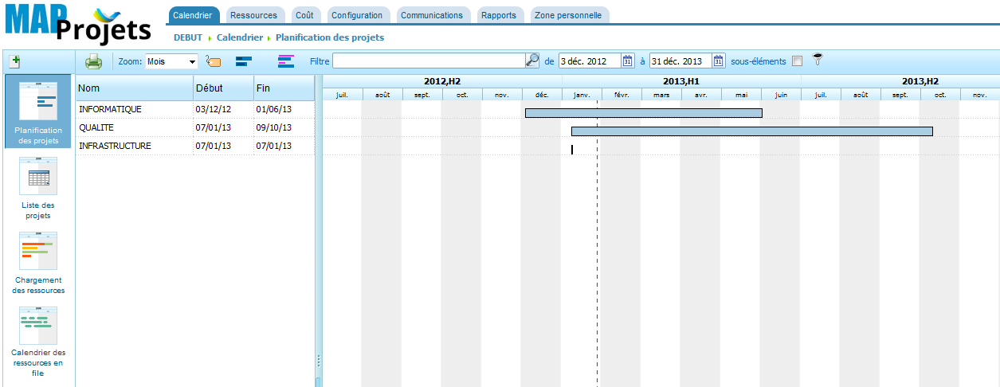
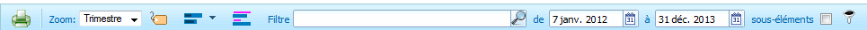
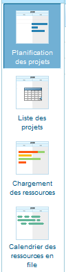
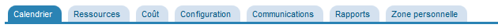

- Introduction
- Comment y accéder
- Un projet
- L'interface
- Menu horizontal
- Menu vertical
- Menu onglet
- Le menu "EDITION"
- Gérer son profil
- Responsable du projet
- Les utilisateurs
- Les profils
- Les rôles
- Le calendrier
- Les ressources
- Ajouter une ressources à une tâches
- Les libellés
- Les filtres
- L'impression
- Les rapports
- Autres...
Libre Plan est une application libre de gestion de projets qui fonctionne avec une interface web. Elle permet de planifier et suivre des projets, de définir des activités, d'estimer des temps de travail ou encore de réaliser des diagrammes de Gantt. Côté technique, elle est écrite en Java/Tomcat et stocke ses données dans une base PostegreSQL. Le code source est quant à lui distribué sous la licence libre AGPL.
PLATEFORME WEB : Cet outil est dédié uniquement au responsable désigné de certain service, il ne peut être utilisé par d'autres personnes.
SAUVEGARDE : le serveur ainsi que la base de données de cet outil est sauvegardé quotidiennement.

Vous pouvez accéder à Libre Plan en ouvrant votre *navigateur internet.
tapez dans l'url ce lien : http://192.168.2.222:8080/libreplan/
Et il ne vous reste qu'à vous connecter avec les identifiant que le "Service Informatique" vous a fait parvenir.
- Nom d'utilisateur
- Mot de passe
*Voici la liste des navigateurs recommandé :
- Firefox
- Google Chrome
- Safari
- Internet explorer
- Opéra
Puis-je y accéder à partir d'internet ? Actuellement, il n'est pas possible d'ouvrir Libre Plan à partir de chez vous (ou de chez un client).
Qu’en pensez-vous qu'il sera disponible ? Il est possible que ce projet n'aboutisse pas pour des raisons de sécurités de notre réseaux IT.
Pour ajouter un projet, il suffit de cliquer sur l'icône situé au-dessus du Menu horizontale.
La création de projet est très simple mais doit respecter certaines règles, un projet doit posséder :
- Un Nom prédéfinie
- Avoir une Date de début et une échéance.
- Si le projet concerne un client, renseignez le.
- Et un calendrier (à laisser par défaut)
EXEMPLE : INFORMATIQUE - FORMATION A LIBRE PLAN
ce nom de projet commence par le nom du service - et comprend une dénomination du projet afin de le différencier des autres projets.
MODEL DE PROJET
Vous avez ensuite la possibilité de baser votre projet sur un modèle existant (si le SI n'a pas créer de model, il est inutile de suivre cette consigne).
Une fois le projet créer, il faut renseigner les champs suivant (situé dans le Menu Verticale).
- Le Responsable du projet
- Une description
- Si le projet concerne un client, renseignez le.
- Et un calendrier (à laisser par défaut pour le moment)
L'interface est composée d'un :
- menu horizontale 
- menu vertical 
- menu onglet 
Chaque menu posséde ses propres fonctions, Voici la liste des principaux fonctions de chaque menu.
Le menu horizontale concerne essentiellement l'affichage central, ce menu permet :
- de filtrer (en fonction d'un libéllé par exemple)
- d'afficher/masquer des informations
- de modifier le Zoom
- de choisir la période d'affichage
Le menu vertical est un sous-menu du menu onglet, ce menu permet :
Dans la vue de la compagnie, vous pourrez afficher :
- un Diagramme de Gantt sommaire à la liste des projets
- la liste des projets
- la charges des ressources
- le calendrier des ressources en file
Dans la vue du projet, vous pourrez afficher en plus :
- un Diagramme de Gantt sommaire à la liste des projets
- la liste des projets
- la charges des ressources
- le calendrier des ressources en file
Le menu onglet permet d'accéder à dautre page (en fonction de vos droits d'acces) :
- Le "Calendrier"
- Vue de la Compagnie
- Projet
- Chargement des ressources
- Ressource en file
- Canevas
- Les "Ressources"
- Participants
- Machines
- Travailleurs virtuels
- Calendrier
- Jours exceptionnels du calendrier
- Critère
- Types d'avancement
- Libellés
- Unités de matériel
- Formulaire qualité
- Le "Coût"
- Feuille de temps
- Canevas de feuille de temps
- Liste des lignes de la feuille de temps
- Dépenses
- Catégories de coût
- Types d'heures
- La "Configuration"
- Réglages principaux
- Compte utilisateurs
- Profils
- La "Communications"
- Sociétés
- Envoyer aus sous-traitants
- Reçu des sous-traitants
- Envoyé aux clients
- Reçu des clients
- Les "Rapports"
- Heures travaillées par ressource
- Total des heures travaillées par ressource et par mois
- Travail et avancement par projet
- Travail et avancement par tâche
- Heures estimées/planifiées par tâche
- Coûts du projet
- Etat prévisionnel de la tâche dans le projet
- Besoin matériels à une date donnée
- Etat du projet
- La "Zone personnelle"
- Accueil
- Préférences
- Modifier le mot de passe
ACCESSIBILITE Vous pourrez seulement afficher les projets qui vous concernent.